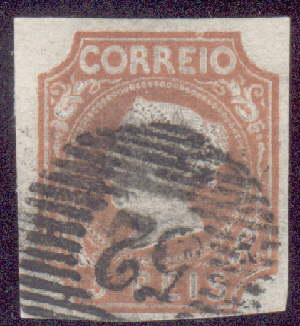
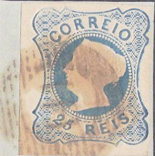
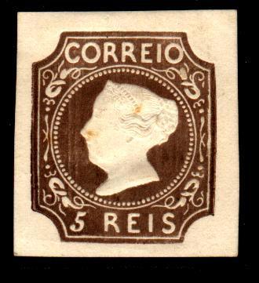
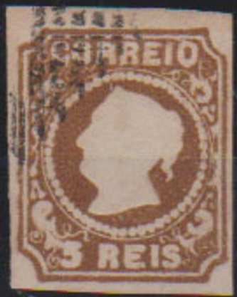
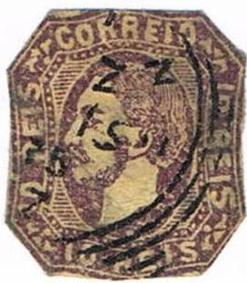
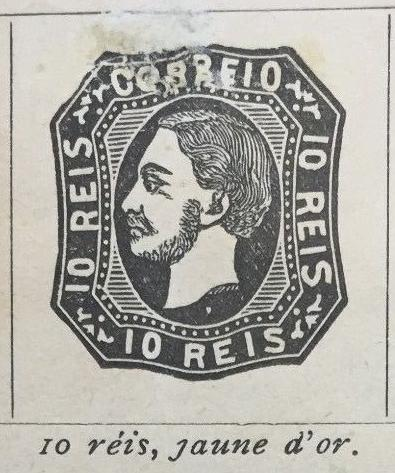

Return To Catalogue - 1866-1872 - 1872-1894 - 1894-1911 - 1912 onwards - Miscellaneous - Fiscal Stamps
Note: on my website many of the
pictures can not be seen! They are of course present in the
catalogue;
contact me if you want to purchase the catalogue.
Angola - Angra - Azores - Cape Verde - Funchal - Horta - Inhambane - Lorenzo Marques - Macao - Madeira - Mozambique - Mozambique Company - Nyassa (Portuguese Nyassaland) - Ponta Delgada - Portuguese Africa - Portuguese Congo - Portuguese Guinea - Portuguese India - Quelimane - St Thomas and Prince - Tete - Timor - Zambezia
Portuguese Colonies, overview - 'Crown issue' - 'Embossed issue (1886)' - 'Newspaper issue (1894)' -1894 King Charles (Carlos) in an ellipse - 1895 King Charles (Carlos) in a circle - 1898 Vasco da Gama issue
5 r brown 25 r blue 50 r green 100 r lilac
Value of the stamps |
|||
vc = very common c = common * = not so common ** = uncommon |
*** = very uncommon R = rare RR = very rare RRR = extremely rare |
||
| Value | Unused | Used | Remarks |
| 5 r | RR | RR | Reprint: * |
| 25 r | RR | * | Reprint: * |
| 50 r | RR | RR | Reprint: ** |
| 100 r | RRR | RR | Reprint: *** |
Numeral cancels were used on these stamps with a
specific number assigned to a city. More than 2 lines are
interrupted in the center. The numbers are from "1"
(Lisboa) to "230" (Villa-nova de Gaia). "48"
was for Angra, "49" for Horta, "50" for Ponta
Delgada, "51" was for Funchal (Madeira), "52"
for Porto (full list on
http://www.pagowirense.nl/stamps/inf-canc-p1.asp).
In 1869 the numbers were reassigned and the cancels changed as
well (only two lines interrupted). Now from number "1"
(still Lisboa) to "240" (S. Braz de Alporto). Now "42" is for Angra, "43" for
Horta, "44" for Ponta Delgada, "45" for
Funchal (Madeira) and "46" for Porto for example (full
list on http://www.pagowirense.nl/stamps/inf-canc-p2.asp).
Reprints exist of these stamps.

1863 reprint, see also
http://www.portugal.tabacaria.com.pt/Reimpressoes/M63_5R.htm, the
color is more dark brown, the head of the Queen smaller and she
has an adams-apple.

1885 reprint in darker brown, there is no curl of hair hanging
from the back of the head. See al;so
http://www.portugal.tabacaria.com.pt/Reimpressoes/M85_5R.htm

1863 reprint of the 25 r, the stamp is overinked at the right
hand side. A tiny white dot can be found in front of the Queen's
eye. Source:
http://www.portugal.tabacaria.com.pt/Reimpressoes/M63_25R.htm

Reprints
The 50 r reprint can be recognized by the break in the frame at the upper right of the secnd 'O' of 'CORREIO' and the almost-break in the frame below the bottom '50'. Reprints with forged cancels exist. More information can be found at: http://www.tabacaria.org/Selos/DMaria/Maria1885.htm. Both the 1863 and 1885 reprints of the 50 r have the same characteristics. In 1905 another reprint of the 50 r value was made (very deceptive, but printed more yellowish-green than the originals). .


1863 reprint, always heavily overinked on the left and right hand
side of the stamp. And 1885 reprint on the right. A 1905 reprint
exists with the outer frameline broken just above the center
right ornament.
Some other reprints made in 1953, with inscription '1853 1953' on the back:

Reduced sizes
A 'reprint' of the 5 r value, issued for the 'Salon der
Philatelie' in Hamburg 1984
Some forgeries without embossing (sem relevo) exist of the
values 5 r, 50 r and 100 r. More information (and pictures) can
be found at:
http://www.tabacaria.org/Selos/DMaria/DMariaFalsos5.htm
http://www.tabacaria.org/Selos/DMaria/DMariaFalsos50.htm and
http://www.tabacaria.org/Selos/DMaria/DMariaFalsos100.htm.

Other forgery of the 5 r value with embossing. Note the different
lettering and the large curl at the back of the head of the
Queen.

A forgery of the 100 r value, often with a '52' numeral cancel.
This forgery has no embossing and is printed quite blur.

Forgery of the 50 r value, the neck is different, the hair hangs
down differently. In clear printed copies, the lettering can be
seen to be different. I've only seen it cancelled with his
pattern of lines. Next to it a 100 r forgery, most likely made by
the same forger.
5 r brown 25 r blue 25 r red (1857) 50 r green 100 r lilac
Value of the stamps |
|||
vc = very common c = common * = not so common ** = uncommon |
*** = very uncommon R = rare RR = very rare RRR = extremely rare |
||
| Value | Unused | Used | Remarks |
| 5 r | RR | RR | Type 1: straight hair, reprint: *** |
| 5 r | R | *** | Type 2: curly hair (1856) |
| 25 r blue | RR | * | Type 1: straight hair, reprint: * |
| 25 r blue | *** | ** | Type 2: curly hair (1856) |
| 25 r red | *** | c | 1857 |
| 50 r | *** | *** | Reprint: ** |
| 100 r | R | R | Reprint: ** |
I know of a reprint of the 5 r value, made in 1905, with the ornament just in front of the 'C' of 'CORREIO' having only one curl (see http://www.tabacaria.org/Selos/DPedroV/DPedroFalsos5.htm for more information).
Another reprint made in 1955 for the 'IV EXPOSICAO FILATELICA
PORTUGUESA' in Porto of the 25 r blue value in a minisheet
containing just one stamp. A numerical cancel '52' can also be
found on this minisheet.
On the following websites:
http://www.tabacaria.org/Selos/DPedroV/DPedroFalsos5.htm
http://www.tabacaria.org/Selos/DPedroV/DPedroFalsos25.htm
http://www.tabacaria.org/Selos/DPedroV/DPedroFalsos50.htm and
http://www.tabacaria.org/Selos/DPedroV/DPedroFalsos100.htm some
forgeries without embossing of all values can be found.
Forgeries exist made by the forger Fohl. I have seen forgeries of the values 5 r, 50 r and 100 r:
(Front and backside of these forgeries)
A large quantity of these forgeries was discovered and distributed with stamp journals (see Cd 1 for more details), they were all overprinted 'Falsch' (= 'forged' in German). The 5 r Fohl forgery has the hair different and the '5' straight (not slanting as in the genuine stamps, source: http://www.tabacaria.org/Selos/DPedroV/Fohls5R.htm).
5 r brown 10 r yellow 25 r red 50 r green 100 r lilac
Value of the stamps |
|||
vc = very common c = common * = not so common ** = uncommon |
*** = very uncommon R = rare RR = very rare RRR = extremely rare |
||
| Value | Unused | Used | Remarks |
| 5 r | *** | * | Two types, '5' and 'R' near or far apart |
| 10 r | *** | *** | |
| 25 r | *** | c | |
| 50 r | R | *** | |
| 100 r | R | *** | |

1885 reprint of the 100 r value.
A very deceptive forgery of the 100 r value exists, more information can be found at: http://www.tabacaria.org/Selos/DLuiz/Luiz100It.htm. It usually has a numeral cancel '1', '12' or '137' (I'm not sure if the above shown stamp is actually genuine....). Color proofs of the same origin(?) also exist.
 
Primitive forgery. The same forgery can be found in an old French
stamp album (see second image).
For stamps of Portugal from 1866 to 1872 click here.
A book has appeared on forgeries of Portugal and its colonies: 'Forgeries of Portugal and Colonies' by D.J Davies (2002, published jointly by the Portuguese Philatelic Society and the British Philatelic Trust).
coleção = collection
catálogo = catalogue
selos = stamps
usados = used


{kind=link}
{kind=link}
{kind=link}
{kind=link}
{kind=link}
{kind=link}
{kind=link}
{kind=link}
{kind=link}
{kind=link}
{kind=link}